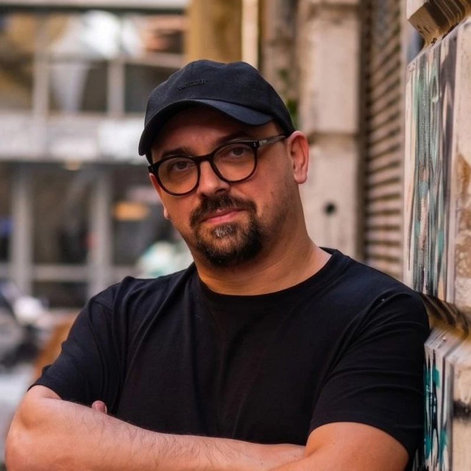
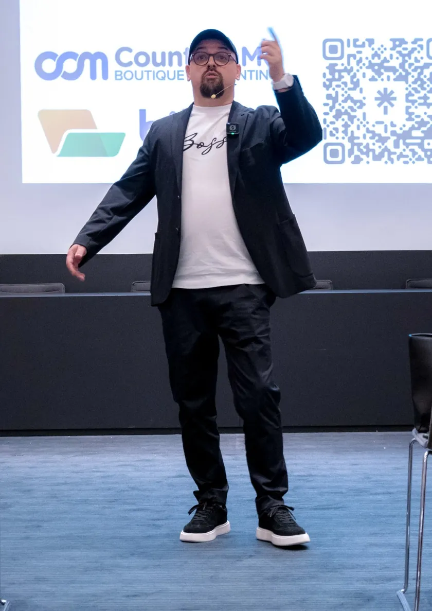

Επιτυχία = Αποτυχία + Πίστη + Επιμονή + Σκληρή δουλειά
Βασίλης ΒασιλειάδηςΛογιστής-φοροτεχνικός Α΄ τάξης · Σύμβουλος επιχειρήσεων
ΔΩΡΕΑΝ E-BOOK

Γεια σου. Είμαι ο Βασίλης.
Λογιστής-φοροτεχνικός Α΄ τάξης, σύμβουλος επιχειρήσεων, τραγουδοποιός, πατέρας τριών αγοριών.
Πριν μάθεις πώς τα κατάφερα, θέλω να μάθεις πού έπεσα. Γιατί οι ιστορίες που αξίζουν ξεκινούν πάντα από μια πτώση.
Αν κάπου μέσα σε αυτές τις σελίδες δεις τον εαυτό σου, στείλε μου μήνυμα στο TikTok ή στο Instagram, @vasiliadisvas. Τα διαβάζω όλα.
Πρόλογος
Μία λέξη.
Σεπτέμβριος 2016. Ένα σπίτι στο Γκέτεμποργκ. Ένα δωμάτιο που το μοιράζομαι με έναν συγκάτοικο που μόλις γνώρισα.
Ακουμπάω τη βαλίτσα κάτω. Και κλαίω. Για πολλή ώρα δεν μπορώ να σταματήσω.
Λίγες εβδομάδες πριν, ήμουν Υπεύθυνος Πράσινης Τραπεζικής στον νομό μου. Τώρα είμαι ένας άντρας σε ένα ξένο δωμάτιο, πάνω από δύο χιλιάδες χιλιόμετρα μακριά από την οικογένειά του και τα τρία μικρά αγόρια του.
Μέσα σε έναν χρόνο θα γυρίσω στην Ελλάδα για μια δουλειά που δεν θα ξεκινήσει ποτέ. Και θα ακούσω, κυρίως από τον εαυτό μου, μια λέξη:
Αποτυχημένος.
Σήμερα τρέχω παράλληλα τέσσερα brands: την Count On Me, ένα boutique λογιστικό γραφείο που διαλέγει τους πελάτες του, τη Billow για τις πάγιες δαπάνες, το προσωπικό μου brand Βασίλης Βασιλειάδης για mentoring και ομιλίες, και τη Song on me Records για τα τραγούδια μου. Τίποτα από αυτά δεν θα υπήρχε χωρίς εκείνη τη λέξη.
Αυτό το βιβλίο είναι γι' αυτόν που κοιτάει σήμερα τη δική του αποτυχία και πιστεύει ότι είναι το τέλος.
Η αποτυχία δεν είναι το τέλος της ιστορίας σου. Είναι το πρώτο συνθετικό της.
Δεν ήρθα να σε χαϊδέψω. Ήρθα να γίνω ο καθρέφτης σου. Πάμε.
Κεφάλαιο 01
Επτάλοφος και 4 χιλιόμετρα.
Υπάρχουν μαθήματα που δεν διδάσκονται στα αμφιθέατρα. Διδάσκονται στο πεζοδρόμιο.
Γεννήθηκα στη Θεσσαλονίκη, στους Αμπελόκηπους, στον Επτάλοφο. Μια γειτονιά που σε μαθαίνει νωρίς την αξία του ενός ευρώ.
Φοίτησα στο Πανεπιστήμιο Μακεδονίας, στο τμήμα Οικονομικών Επιστημών. Πήρα το πτυχίο μου στα πεντέμισι χρόνια. Όχι επειδή έπινα καφέδες όλη μέρα. Αλλά γιατί δούλευα συνεχώς, για να χρηματοδοτώ τις σπουδές μου.
ΣερβιτόροςΔιανομέαςΠωλητήςΜεσίτης
Αμέτρητες φορές περπατούσα πάνω από τέσσερα χιλιόμετρα από τη σχολή μου μέχρι το σπίτι, για να γλιτώσω το εισιτήριο του λεωφορείου. Εκείνα τα χιλιόμετρα μού έμαθαν ότι κάθε ευρώ κοστίζει ώρες. Ότι ο πωλητής που ακούει πουλάει περισσότερα από αυτόν που μιλάει. Ότι ο μεσίτης που λέει την αλήθεια χάνει μια πώληση και κερδίζει δέκα συστάσεις.
Μετά τις σπουδές, πέντε χρόνια στα ακίνητα. Και στα 25 μου, ο Σωτήρης Μ. με εμπιστεύτηκε και με πρότεινε για μια θέση στην τράπεζα. Η κάρτα μου έγραφε πλέον: «Περιφερειακός Σύμβουλος Ανάπτυξης Βορείου Ελλάδος». Σωτήρη, σε ευχαριστώ.
Για ένα παιδί από τον Επτάλοφο της δυτικής Θεσσαλονίκης που λογάριαζε το εισιτήριο του λεωφορείου, ήταν κάτι παραπάνω από τίτλος. Ήταν απόδειξη. Κι εκεί κρύβεται η παγίδα: όταν ο τίτλος γίνεται απόδειξη, τον φοράς σαν πανοπλία. Και η πανοπλία δεν σε αφήνει να κάνεις βήμα πίσω.
Το μάθημα
Τα δύσκολα χρόνια δεν σου δίνουν πτυχίο. Σου δίνουν ραχοκοκαλιά.
Κεφάλαιο 02
Δεξιά ή αριστερά.
Το πιο δύσκολο βήμα της καριέρας μου ήταν προς τα πίσω.
Κρίση στεγαστικών. Η αγορά που στήριζε τη θέση μου πάγωνε. Σε μια ομιλία, η γενική διευθύντρια μάς είπε κάτι που δεν το ξέχασα ποτέ: ασφαλείς θα ήταν όσοι βρίσκονταν στο δίκτυο, στα καταστήματα.
Πήρα την απόφαση. Πήγα στον περιφερειακό μου διευθυντή και του ζήτησα να πάω στο δίκτυο. Μετακόμιζα τότε από τη Θεσσαλονίκη σε ένα χωριό του νομού Πέλλας, κοντά στα Γιαννιτσά: τη Νέα Πέλλα. Πάντα ήθελα να ζω με ηρεμία, έξω από την πόλη, και να φτιάξω οικογένεια. Οπότε ζήτησα το κοντινότερο κατάστημα, στα Γιαννιτσά.
Και επειδή ήμουν στα κεντρικά και γνώριζα κόσμο, ζήτησα να πάω ως προϊστάμενος ταμείων. Για να μη χάσω τελείως τον τίτλο και τις αποδοχές. Ένιωθα άσχημα που υποβαθμιζόμουν. Ήθελα να κρατήσω κάτι.
Η απάντησή του:
«Δεν έχεις γνώσεις καταστήματος. Θα μάθεις από την αρχή.»
«Κι εγώ κάποτε ήμουν σαν κι εσένα», συνέχισε. «Και ανάγκασα τους προϊσταμένους μου να δημιουργήσουν ειδική θέση για μένα. Πιστεύω ότι κι εσύ θα τα καταφέρεις.»
Από την αρχή σήμαινε ταμίας. Το δέχτηκα. Στις 15 Νοεμβρίου 2010 έπιασα θέση πίσω από το γκισέ στα Γιαννιτσά. Στο ταμείο έμεινα τελικά περίπου δύο μήνες. Μετά, μόνο κάποιες φορές καθόμουν στο κεντρικό ταμείο.
Η διασταύρωση
Βγαίνοντας από το σπίτι με το αυτοκίνητο, υπήρχε μια διασταύρωση. Δεξιά, Γιαννιτσά. Αριστερά, Θεσσαλονίκη.
Για τέσσερις μήνες, κάθε πρωί, ήθελα να στρίψω αριστερά. Ξεκάθαρα. Να γυρίσω στο παλιό γραφείο, στον παλιό μου τίτλο, στους παλιούς μου συναδέλφους. Δεν περνούσα καλά.
Και κάθε πρωί έστριβα δεξιά.
Δύο μήνες μετά, γεννήθηκε ο μεγάλος μου γιος. Από εκείνη τη μέρα, το δεξιά είχε κι άλλο λόγο.
Σιγά σιγά εγκλιματίστηκα. Με έμαθαν, τους έμαθα. Από εκείνο το γκισέ έφτιαξα σχέσεις ζωής. Έναν χρόνο μετά, οι περισσότεροι από τους παλιούς μου συναδέλφους στα κεντρικά είχαν φύγει. Είχαν αποχωρήσει «οικειοθελώς». Εγώ έμεινα. Πέρασα από όλα τα πόστα και, μετά από κάποια χρόνια, έφτασα να είμαι Υπεύθυνος Πράσινης Τραπεζικής στον νομό μου.
Στις 31 Ιουλίου 2016 παραιτήθηκα. Είχα καταλάβει ότι αυτό δεν μου ταιριάζει. Δεν ήθελα να είμαι υπάλληλος. Δεν ήθελα τίποτα να σταματάει την εξέλιξη και την πρόοδό μου. Δεν ήθελα ταβάνια.
Το μάθημα
Όποιος ντρέπεται να κάνει ένα βήμα πίσω, δεν θα κάνει ποτέ δύο μπροστά. Και καμιά φορά, το θάρρος είναι απλώς να στρίψεις δεξιά, ενώ όλο σου το σώμα θέλει αριστερά.
Κεφάλαιο 03
Γκέτεμποργκ.
Είμαι άνθρωπος των αριθμών. Γι' αυτό η μεγαλύτερη αποτυχία μου ήρθε από τους αριθμούς.
Την απόφαση την πήρα όπως την παίρνει ένας οικονομολόγος. Μισθοί, ανεργία, ΑΕΠ. Ελλάδα και Σουηδία, δίπλα δίπλα. Τα νούμερα έλεγαν «φύγε». Όσα δεν μετριούνται, δεν τα έλαβα ποτέ υπόψη μου.
Το πρώτο βράδυ το είπα ήδη: ένα δωμάτιο με συγκάτοικο, μια βαλίτσα, κι εγώ να κλαίω για πολλή ώρα επειδή είχα αφήσει πίσω την οικογένειά μου. Δεν ήμουν καλά ψυχολογικά. Είναι αλήθεια.
Αλλά το πάλεψα. Μέσα σε λίγους μήνες κατάφερα όσα άλλοι παλεύουν χρόνια: μπήκα στο σύστημα, πήρα σουηδικό αριθμό μητρώου (το δικό τους «ΑΜΚΑ»), σουηδική ταυτότητα, βρήκα δουλειά, έβγαλα ένσημα.
Όταν ήρθε η οικογένειά μου
Η οικογένειά μου ήρθε για ένα διάστημα. Και τότε το είδα καθαρά. Όλο το κλίμα, όλη η ατμόσφαιρα γύρω μας, μου έλεγαν ότι για να φτάσουμε στο επίπεδο ζωής που ήθελα θα χρειαζόταν πάρα πολλά χρόνια.
Και είδα τη ζωή που με περίμενε. Τη ζωή που κάνουν πολλοί Έλληνες του εξωτερικού: γυρνάς από τις διακοπές, δουλεύεις τις ώρες σου, πας σπίτι και σκέφτεσαι πότε θα ξαναπάς στην Ελλάδα. Κλείνεις εισιτήρια για Χριστούγεννα και Πάσχα. Μόλις επιστρέψεις, κλείνεις για το καλοκαίρι. Και ενδιάμεσα, σκέφτεσαι τους δικούς σου, τους φίλους σου, που είναι όλα κάπου αλλού.
Δεν ήθελα να ζω περιμένοντας τη ζωή μου.
Τη λησμονιά και την απουσία των δικών σου ανθρώπων δεν τις μετράς. Μόνο τις πληρώνεις.
Πτήση 968
Όταν πήρα την απόφαση να γυρίσω, κι όσο ετοιμαζόμουν να φύγω, ήμουν χαρούμενος. Γύριζα σπίτι. Τότε έγραψα την «Πτήση 968». Ο τίτλος είναι ο αριθμός της θέσης πάρκινγκ που είχα στη Σουηδία.
Δεν γύρισα στα τυφλά. Γύρισα με πρόταση για μια πολύ καλή θέση. Τελικά, η πρόταση έμεινε στα χαρτιά και στις υποσχέσεις.
Καλοκαίρι 2017. Ήρθε μια πρόσκληση: δουλειά σε μεγάλη εταιρεία της περιοχής μου, με πολύ καλό μισθό. Έκανα δύο συνεντεύξεις από το εξωτερικό. Μου είπαν, αν επιστρέψω, να πάω να τα συζητήσουμε από κοντά για να ξεκινήσω.
Είχαμε μιλήσει. Ο άνθρωπος της εταιρείας μού τηλεφώνησε ξανά και ξανά. Μου είπε να μην ανησυχώ: γινόταν μια ανακαίνιση στα κτίρια όπου θα στεγαζόμουν, και μέσα σε περίπου δύο μήνες θα με καλούσε να ξεκινήσω. Είχαμε κι άλλες επικοινωνίες στο ενδιάμεσο. Όλα έδειχναν ότι ήταν θέμα χρόνου.
Πέρασαν οι δύο μήνες.
Πέρασε κι άλλος ένας.
Η κλήση δεν ήρθε ποτέ.
Τη δουλειά δεν την πήρα. Το ότι γύρισα όμως, δεν το μετάνιωσα ποτέ.
Δεν υπήρξε καβγάς, ούτε εξήγηση, ούτε πόρτα που έκλεισε με κρότο. Υπήρξε μόνο σιωπή. Και η σιωπή είναι χειρότερη από το «όχι», γιατί δεν σου δίνει κάτι να παλέψεις. Σε αφήνει να παλεύεις με τον εαυτό σου.
Χωρίς την τράπεζα. Χωρίς τη Σουηδία. Χωρίς τη δουλειά για την οποία γύρισα. Με τρία μικρά παιδιά. Σταμάτησα να περιμένω και άρχισα να κινούμαι αλλιώς. Αλλά μέσα μου έμεινε μία λέξη:
Αποτυχημένος.
Ένα τραγούδι
Σε εκείνους τους μήνες χωρίς δουλειά, όταν άρχισα να νιώθω ότι είχα κάνει λάθος, έγραψα το «Γνώθεις εαυτόν». Δεν ήμουν καλά και έκανα πολύ άσχημες σκέψεις για τον εαυτό μου. Έπρεπε να βγουν κάπου. Βγήκαν σε στίχους. Είναι από τα πιο αγαπημένα μου τραγούδια:
«Πόσο τον μισώ αυτόν τον εαυτό μου που άλλα σκέφτεται συνέχεια κι άλλα λέει. Μα πόσο τον μισώ, κι ας είναι για καλό μου, που όλο κρύβεται στα πρέπει και δεν φταίει.»
Και στη δεύτερη στροφή, χωρίς να το ξέρω ακόμα, έγραψα την απάντηση:
«Πόσο τον μισώ αυτόν τον εαυτό μου που όλο πνίγεται στα ίσως, μα επιπλέει.»
«Μα επιπλέει». Αυτές οι δύο λέξεις είναι όλο αυτό το βιβλίο.
Αν διαβάζοντας αυτές τις γραμμές αναγνωρίζεις τον εαυτό σου, μη μείνεις μόνος. Μίλα σε κάποιον. Η Γραμμή Παρέμβασης για την Αυτοκτονία, 1018, απαντάει όλο το 24ωρο.
Την ίδια χρονιά, ένα άλμπουμ
Την ίδια χρονιά, το 2017, κυκλοφόρησε το πρώτο μου άλμπουμ, το «Πότε θα σε δω», από τη Spider Music. Αυτοδίδακτος, στίχοι και μουσική. Single του δίσκου ήταν η «Πτήση 968», το τραγούδι της επιστροφής.
Το «Γνώθεις εαυτόν» δεν μπήκε ποτέ στον δίσκο. Κυκλοφόρησα άλλα τραγούδια, ενώ μέσα μου δεν ένιωθα καθόλου καλά.
Η «Πτήση 968» ήταν ο δρόμος για το σπίτι. Το «Γνώθεις εαυτόν» ήταν αυτό που βρήκα όταν έφτασα.
Η χρονιά που ένιωσα πιο αποτυχημένος από ποτέ ήταν και η χρονιά που έβγαλα τραγούδια μου στον κόσμο. Η αποτυχία σε ένα κομμάτι της ζωής σου δεν σβήνει τα υπόλοιπα. Μόνο σε κάνει να μην τα βλέπεις για λίγο.
Το μάθημα
Το «απέτυχα» είναι γεγονός. Έχει ημερομηνία και τελειώνει. Το «είμαι αποτυχημένος» είναι ταυτότητα και δεν λήγει. Διάλεξε ποιο θα κρατήσεις.
Κεφάλαιο 05
Χαρτί και μολύβι.
Σεπτέμβριος 2017. Ένας πρώην τραπεζικός κάθεται ξανά στο θρανίο.
Δεν το σκέφτηκα μόνος μου. Με έσπρωξε ο Χάρης Π., παλιός συνάδελφος από την τράπεζα. Μέναμε σε διπλανές περιοχές και για καιρό μοιραζόμασταν το αυτοκίνητο για να πάμε στη δουλειά, στη Θεσσαλονίκη.
Ο Χάρης ήταν ένας από εκείνους τους συναδέλφους που έφυγαν από την τράπεζα, το 2011. Είχε γίνει λογιστής. Είχε μάθει λογιστική στα αδέρφια Καραγιάννη, που βοηθούν εδώ και ατελείωτα χρόνια νέους λογιστές να μάθουν να εφαρμόζουν σωστά τη λογιστική στην πράξη. «Είναι επάγγελμα που μπορεί να πάει καλά», μου είπε, και μου τους σύστησε. Χάρη, σε ευχαριστώ από καρδιάς.
Μαθήματα λογιστικής λοιπόν, από το μηδέν, στα αδέρφια Καραγιάννη. Για να φρεσκάρω όσα ήξερα. Και για να μάθω λογιστική στην πράξη. Όχι στον υπολογιστή. Με χαρτί και μολύβι.
Ένιωσα σαν να γύρισα στα φοιτητικά μου χρόνια. Και θα σου πω την αλήθεια: δεν ήταν ό,τι καλύτερο. Δεν το έκανα με αγάπη. Ποτέ δεν ήμουν από τους ανθρώπους που τους αρέσει ιδιαίτερα το διάβασμα.
Αλλά ήταν κάτι που έπρεπε να μάθω. Οπότε το πήρα πολύ σοβαρά.
Ήταν η δεύτερη φορά στη ζωή μου που ξεκινούσα από το μηδέν. Η πρώτη ήταν το γκισέ στα Γιαννιτσά. Και πάλι πόνεσε ο εγωισμός. Και πάλι ήταν η σωστή κίνηση.
Τους ευχαριστώ πολύ για όσα μου έμαθαν. Εξαιρετικοί άνθρωποι, εξαιρετικοί επαγγελματίες. Ακόμα και σήμερα, σε πολλά πράγματα, τους τηλεφωνώ, τους ρωτάω, τους βασίζομαι.
Αυτό που δεν σου λέει κανείς για την αρχή: η προσπάθεια και το αποτέλεσμα δεν είναι ανάλογα. Στην αρχή δίνεις 100 και παίρνεις 2. Οι περισσότεροι τα παρατάνε εκεί. Δεν ξέρουν ότι λίγο πιο μετά, για τα ίδια 100, θα παίρνουν 50. Και αργότερα 200.
Το μάθημα
Δεν χρειάζεται να αγαπάς κάθε βήμα. Χρειάζεται να το κάνεις. Το θρανίο δεν είναι υποβιβασμός. Είναι το σημείο που πατάει η ρόδα.
Κεφάλαιο 06
Η ρόδα στη λάσπη.
Μάρτιος 2018. Ανοίγω την ατομική μου επιχείρηση: Count On Me Συμβουλευτική.
Δεν ήμουν γόνος λογιστών. Ήταν καινούργιο γραφείο, χωρίς πελατολόγιο, χωρίς όνομα. Για να έρθει κόσμος, έβαλα κι άλλες υπηρεσίες: συμβουλευτική ενέργειας, αυτό που σήμερα κάνουμε με τη Billow. Και ασφάλειες, γιατί είχα ήδη την πρώτη άδεια από την τράπεζα.
Ο πρώτος μου πελάτης ήρθε με σύσταση από την κυρία Ντίνα μου, τη διευθύντρια της καρδιάς μου. Λένε ότι κάποια πράγματα δεν είναι τυχαία. Εκείνο το γκισέ στα Γιαννιτσά, που κάθε πρωί ήθελα να το αποφύγω, μου έστειλε τον πρώτο πελάτη.
Μια φίλη, σε ένα σεμινάριο
Για τις ασφάλειες παρακολούθησα σεμινάρια ασφαλιστικών προϊόντων και πωλήσεων. Εκεί, μια φίλη με υψηλή θέση στον χώρο, η Μελτίνη Κ., μού είπε κάτι που άλλαξε τον τρόπο που έβλεπα τη Σουηδία:
«Αυτό που έχεις εσύ στο μυαλό σου για σένα και αυτό που πιστεύει ο άλλος για σένα απέχουν πολύ. Είμαστε η ιστορία μας. Και την ιστορία μας τη γράφουμε εμείς. Εσύ νιώθεις ότι γύρισες αποτυχημένος. Ο άλλος βλέπει κάποιον που πήγε, πήρε μαθήματα, έγινε καλύτερος και γύρισε καλύτερος.»
Και μετά, αυτό που κουβαλάω μέχρι σήμερα:
«Βάλε όλη σου τη δύναμη να ξεκολλήσεις τη ρόδα από τη λάσπη. Μόλις ξεκολλήσει και αρχίσει να τσουλάει, θα έρθει η ώρα να φέρεις κι άλλους ανθρώπους να την κρατάνε. Γιατί θα πάρει τέτοια φόρα, που μόνος σου δεν θα προλαβαίνεις.»
Την ευχαριστώ πάρα πολύ γι' αυτό.
Το μάθημα
Την ιστορία σου τη γράφεις εσύ. Οι άλλοι βλέπουν μόνο όσα τους δείχνεις. Και η ρόδα θέλει δύναμη για να ξεκολλήσει, και ανθρώπους για να την κρατάνε όταν πάρει φόρα.
Κεφάλαιο 07
Δύο «όχι».
Όταν ξεκινάς από το μηδέν, ο πειρασμός είναι να πεις «ναι» σε όλα. Εγώ έδωσα στον εαυτό μου μια υπόσχεση: καμία έκπτωση από ανάγκη.
Ξεκίνησα σιγά σιγά, δειλά. Βοήθησα πολύ κόσμο. Αλλά δύο «όχι» έχτισαν το γραφείο περισσότερο από κάθε «ναι».
Το πρώτο «όχι»: 70 ευρώ
Ένας επιχειρηματίας ήρθε να συζητήσουμε να αναλάβω τα λογιστικά του. Του είπα 70 ευρώ τον μήνα. Δεν ήταν κάτι τρομερό για τη δουλειά που χρειαζόταν.
«Δεν μπορώ», μου είπε. «Εκεί που είμαι δίνω 40.»
Ήμουν στην αρχή. Κάθε πελάτης μετρούσε. Και του απάντησα:
«Τα 40 ευρώ είναι ευτελή γι' αυτή τη δουλειά. Μείνε εκεί που είσαι, αν θέλεις. Εγώ κάτω από 70 δεν μπορώ να σε αναλάβω.»
Το δεύτερο «όχι»: εστίαση και μπαρ
Μετά ήρθαν μαγαζιά εστίασης και μπαρ. Από την πρώτη στιγμή τους είπα: «Όχι. Δεν αναλαμβάνω τέτοιες επιχειρήσεις. Σας ευχαριστώ πολύ.» Δεν αναλάμβανα μπαρ και εστίαση γιατί δεν μου ταίριαζαν.
Η αγορά σε αντιμετωπίζει όπως αντιμετωπίζεις εσύ τον εαυτό σου. Αν πουλάς φτηνά επειδή φοβάσαι, θα σε αγοράζουν φτηνά επειδή το μυρίζονται.
Ο κόμπος της πληρωμής
Υπάρχουν 12 ώρες. Και 14. Υπάρχει η στιγμή που κοιτάς τρία αγόρια να κοιμούνται και νιώθεις ταυτόχρονα τη μεγαλύτερη αγάπη και τον μεγαλύτερο φόβο.
Και υπάρχει ο κόμπος στο στομάχι πριν από τις πληρωμές. Κάθε μήνα.
Στη ζωή έμαθα ότι δεν είναι σοφό να παίρνεις αποφάσεις κοιτάζοντας μόνο τους αριθμούς, ειδικά όταν οι αποφάσεις είναι μεγάλες. Όταν επέστρεψα όμως, έμαθα ότι οι αριθμοί μαζεύουν τον φόβο. Όταν ήξερα ακριβώς πόσα χρειάζομαι και πότε, ο κόμπος μίκραινε.
Το μάθημα
Η έκπτωση από ανάγκη δεν σε σώζει. Σε κλειδώνει. Κάθε «όχι» στον λάθος πελάτη είναι ένα «ναι» στον σωστό.
Κεφάλαιο 08
Σήμερα.
Η ρόδα ξεκόλλησε. Και ήρθε η ώρα που είχε πει η φίλη μου: να φέρω κι άλλους ανθρώπους να την κρατάνε.

Πλέον το λογιστικό κομμάτι πέρασε σε νέα εταιρεία, την Count On Me Group Ε.Ε., boutique accounting, με έμπειρους συνεργάτες του χώρου. Συνεργάτες και πελάτες που μας εμπιστεύονται, που μας ανέχονται, και στους οποίους είμαστε ευγνώμονες για τη συνεργασία μας. Και η επιτυχία μας είναι ακριβώς αυτή: δεν είμαστε για όλους. Επιλέγουμε τους πελάτες μας.
Και η ατομική μου επιχείρηση μεγάλωσε:
Billow: πάγιες δαπάνες για επιχειρήσεις και νοικοκυριά (ενέργεια, τηλεφωνία, internet, ασφάλειες). Vasilis Vasiliadis: mentoring, strategy, education. The Bill Method™. Song on me Records: η δική μου δισκογραφική. Τελευταία κυκλοφορία: «Τραγούδια για ζώα».
Ο άνθρωπος που το 2017 περίμενε ένα τηλέφωνο που δεν χτύπησε ποτέ σήμερα τρέχει παράλληλα τέσσερα brands. Η αποτυχία σε απελευθερώνει. Όταν έχεις ήδη χάσει αυτό που φοβόσουν, δεν έχει μείνει τίποτα να σε κρατάει πίσω.
Γράφω τραγούδια όταν νιώθω κάτι έντονα, ό,τι κι αν είναι αυτό. Ή όταν βλέπω κάτι γύρω μου: μια θεατρική παράσταση, μια ταινία, μια ιστορία που μου λέει ένας φίλος. Όλα αυτά μου γεννούν εικόνες, και τις εικόνες τις αποτυπώνω σε χαρτί και σε μουσική.
Το «Γνώθεις εαυτόν», το τραγούδι που έγραψα όταν έμεινα χωρίς δουλειά στην Ελλάδα, δεν έχει κυκλοφορήσει ακόμα. Θα το ακούσουν πρώτοι όσοι με ακολουθούν: TikTok και Instagram @vasiliadisvas.
Και πάνω από κάθε τίτλο: πατέρας τριών αγοριών. Ο μόνος τίτλος που δεν θα μπει ποτέ σε κάρτα, και ο μόνος που μετράει πραγματικά.
Κεφάλαιο 09
Η εξίσωσή μου.
Είμαι λογιστής. Δεν μπορώ να κλείσω μια ιστορία χωρίς να την κάνω εξίσωση. Όσα διάβασες ως εδώ χωράνε σε τέσσερις λέξεις.
Επιτυχία = Αποτυχία + Πίστη + Επιμονή + Σκληρή δουλειά
Η αποτυχία είναι το πρώτο συνθετικό. Δεν τη θέλει κανείς. Όλοι την περνάμε. Και χωρίς αυτήν, τα υπόλοιπα δεν έχουν πού να πατήσουν. Ένα εργαλείο για το καθένα:
Συνθετικό
Το εργαλείο
Αποτυχία η πρώτη ύλη
Η Ακτινογραφία. Τρεις ερωτήσεις: Τι ακριβώς συνέβη; Ποιο ήταν το δικό μου μερίδιο; Τι θα κάνω διαφορετικά, σε μία κίνηση;
Πίστη η πυξίδα
Το Αρχείο αποδείξεων. Μια σημείωση στο κινητό. Κάθε μικρή νίκη, γραμμένη. Τις κακές μέρες την ανοίγεις. Η πίστη δεν είναι συναίσθημα. Είναι μνήμη.
Επιμονή η μηχανή
Ο κανόνας «Μία ακόμα». Όταν θέλεις να τα παρατήσεις, κάνε μία ακόμα: ένα τηλέφωνο, μια προσφορά, μια σελίδα. Μετά αποφασίζεις. Επιμένεις στον στόχο, αλλάζεις τη μέθοδο.
Σκληρή δουλειά το καύσιμο
Η ερώτηση της Δευτέρας. «Ποιο είναι το ένα πράγμα που, αν το κάνω αυτή την εβδομάδα, κάνει τα άλλα πιο εύκολα ή περιττά;» Αυτό το κάνεις πρώτο.
Η σειρά σου
Τέσσερις γραμμές.
Αρκετά για μένα. Πάρε ένα στυλό ή άνοιξε μια σημείωση στο κινητό. Μία γραμμή η καθεμία. Η πρώτη απάντηση είναι συνήθως η αληθινή.
1 · Η πτώση
Ποια αποτυχία λες ακόμα με «είμαι»; Ξαναγράψ' την ως γεγονός: «Το … απέτυχα σε … Έμαθα ότι …»
2 · Το γιατί
Ποιο πρόσωπο, ποια εικόνα σε σηκώνει το πρωί;
3 · Το βήμα πίσω
Ποιο «κατεβάστε με στο δίκτυο» αποφεύγεις επειδή φοβάσαι τι θα πουν;
4 · Η μία κίνηση
Ποια μία κίνηση, αυτή την εβδομάδα, σπρώχνει τη ρόδα λίγα εκατοστά;
Θες να το κάνεις πράξη; 7 μέρες, 20 λεπτά τη μέρα
1
Ακτινογραφία: οι 3 ερωτήσεις για την αποτυχία που σε βαραίνει περισσότερο.
2
Από «είμαι» σε «απέτυχα»: ξαναγράψε 3 φράσεις που σε κρατάνε πίσω.
3
Αρχείο αποδείξεων: 10 πράγματα που έχεις καταφέρει. Από αύριο, ένα κάθε μέρα.
4
Το γιατί σε εικόνα: βάλε φόντο στο κινητό τη φωτογραφία που σε σηκώνει.
5
Το ένα νούμερο: πόσα χρειάζεσαι τον μήνα για να είσαι ήσυχος, και πόσα βγάζεις σήμερα.
6
Το βήμα πίσω: το τηλέφωνο που αναβάλλεις, η βοήθεια που δεν ζητάς, το «όχι» στην έκπτωση από ανάγκη.
7
Η ιστορία σου σε 5 γραμμές: πού απέτυχες, τι έμαθες, πού πας. Στείλ' τη σε κάποιον που εμπιστεύεσαι. Ή σε μένα.
Ανέβαζε κάθε μέρα story με «Μέρα Χ/7», βάλε #ΞεκόλλαΤηΡόδα και κάνε tag @vasiliadisvas σε TikTok ή Instagram. Όποιος φτάσει στο 7/7, ας μου στείλει μήνυμα.
Επίλογος
Σε σένα που σκέφτεσαι να τα παρατήσεις.
Δεν σε ξέρω. Αλλά ξέρω πώς νιώθεις.
Ξέρω πώς είναι να κλαις σε ένα ξένο δωμάτιο. Να θέλεις κάθε πρωί να στρίψεις αριστερά. Να περιμένεις ένα τηλέφωνο που δεν χτυπάει. Να κοιτάς τα παιδιά σου και να αναρωτιέσαι αν τα απογοήτευσες.
Πρώτον: αυτό που νιώθεις τώρα δεν είναι μόνιμο. Είναι η φάση που η ρόδα σπινάρει. Η πιο δύσκολη και η πιο σύντομη, ακόμα κι αν δεν φαίνεται. Και αν βαραίνει πολύ, μην το κουβαλάς μόνος: μίλα σε κάποιον.
Δεύτερον: δεν είσαι μόνος. Κάθε άνθρωπος που θαυμάζεις έχει μια ιστορία που δεν θα την έβαζε ποτέ στο βιογραφικό του. Εγώ σου είπα τη δική μου.
Τρίτον: δεν χρειάζεται να γνωρίζεις όλο τον δρόμο. Μόνο το επόμενο βήμα. Αύριο θα ξέρεις το μεθεπόμενο.
Η ζωή δεν σε ρωτάει αν θα αποτύχεις. Θα αποτύχεις. Σε ρωτάει μόνο ένα πράγμα:
Θα σηκωθείς;
Το ότι διαβάζεις αυτές τις γραμμές σημαίνει ότι είσαι ακόμα εδώ. Ακόμα ψάχνεις. Αυτό δεν είναι αποτυχία. Είναι η αρχή της ιστορίας σου.
Βασίλης
Γράψε μου μία λέξη: ποια σελίδα σου έμεινε; Στείλ' τη στο TikTok ή στο Instagram, @vasiliadisvas. Και στείλε το βιβλίο σε έναν άνθρωπο που το χρειάζεται. Όχι σε όλους. Σε έναν.
Το επόμενο βήμα
Ξεκίνα από ένα νούμερο.
Η έμπνευση κρατάει μια εβδομάδα. Η μέθοδος κρατάει μια ζωή.
Bill Score · δωρεάν
Έχεις επιχείρηση ή ετοιμάζεσαι; 20 ερωτήσεις, 5 λεπτά. Βλέπεις αμέσως πού κολλάει η ρόδα σου και από πού να ξεκινήσεις.
 Bill Score
Bill Score TikTok
TikTok Instagram
Instagram